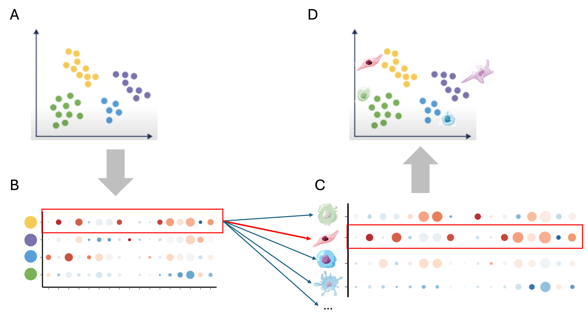
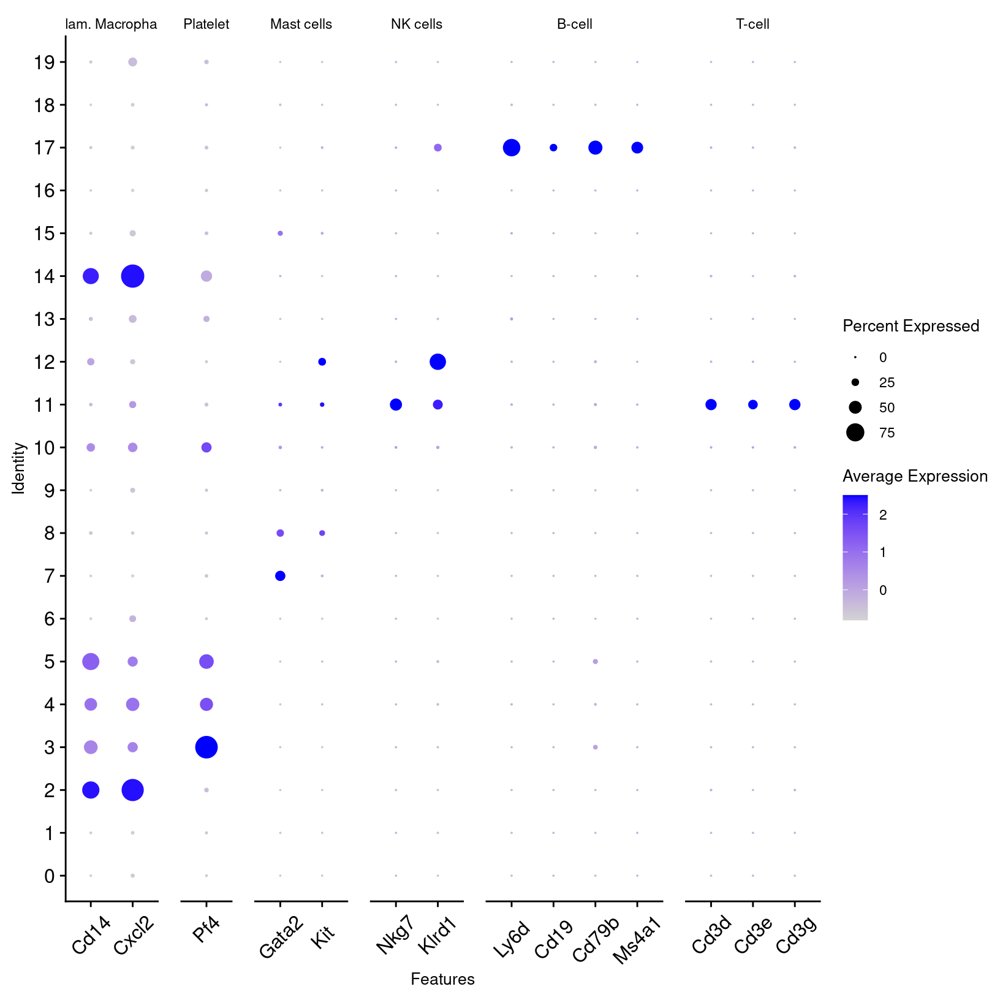
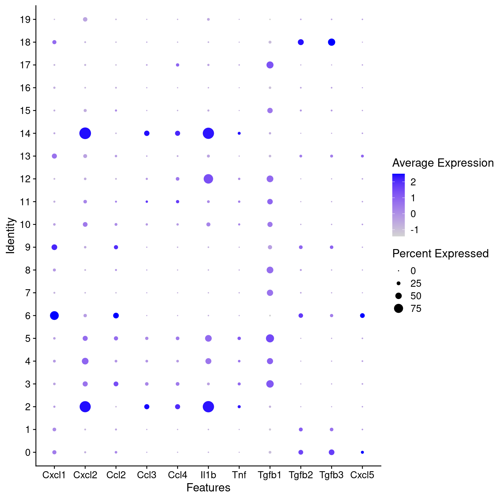
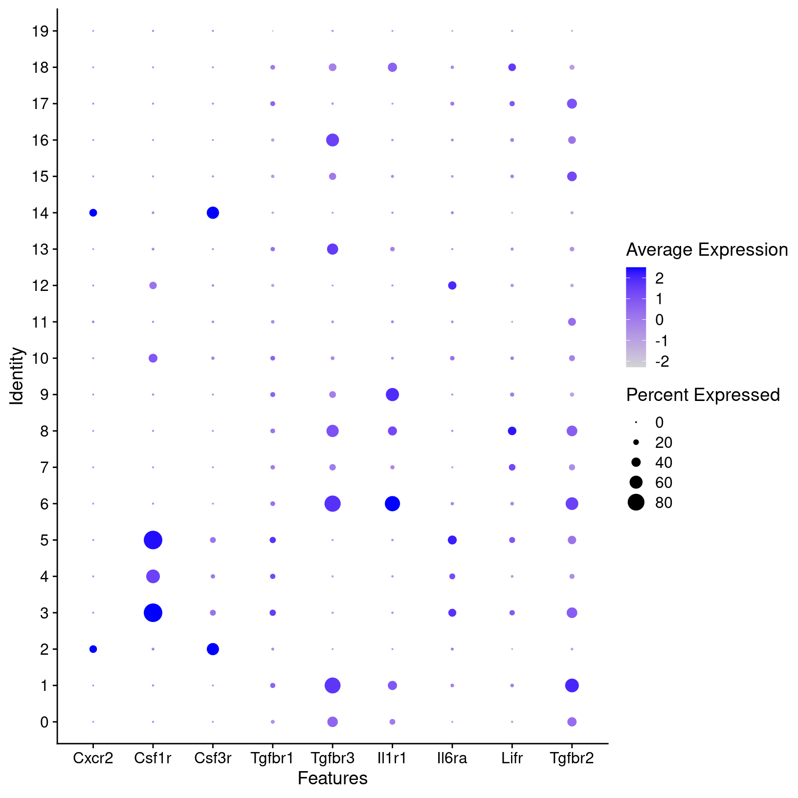
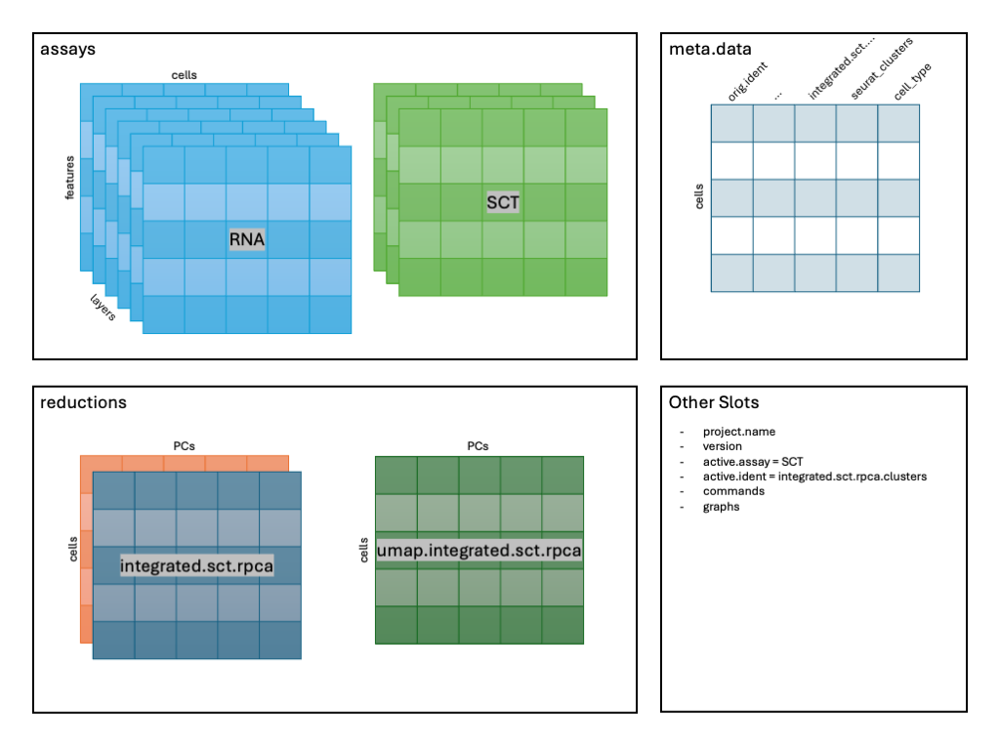
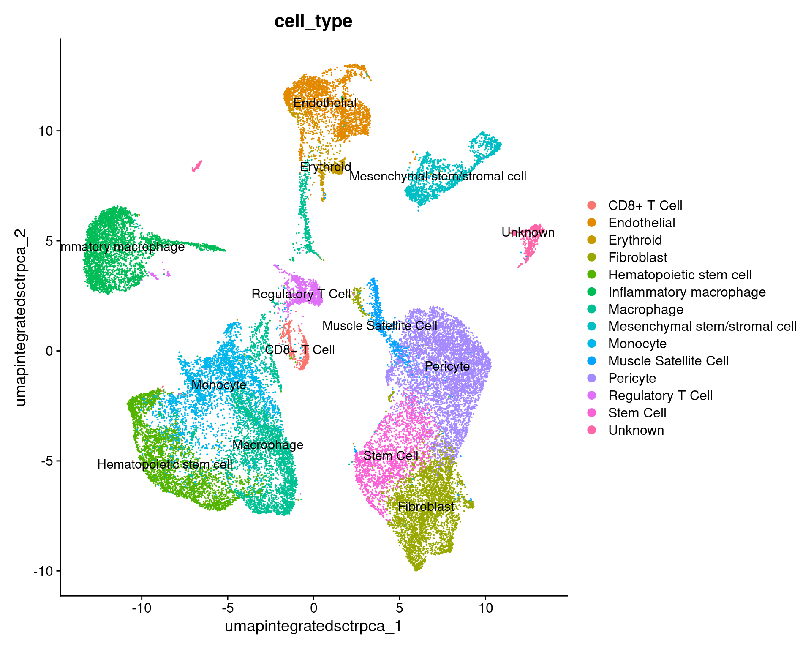
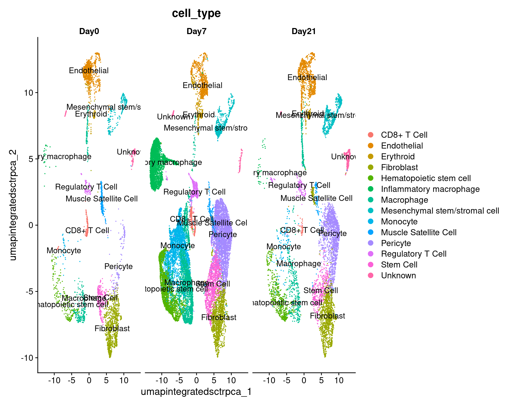

Workflow Overview

Introduction
A frequent bottleneck in the single-cell RNA-seq analysis workflow is
annotating our clustering results, as it requires bridging the gap
between the data and prior knowledge (source).
While generating markers for each cluster and evaluating the expression
of known marker genes is important, it may or may not be sufficient to
assign cell-type or sub-type labels.
|

|
|
For each cell-type (A), the marker genes we derived in the prior step
(B) are compared with known marker genes for different cell types (C).
Concordance between derived marker genes and known cell markers produces
a suggested annotation for that cell type.
|
In this section, our goal is to use an automated annotation tool to
generate cell type predictions for our clusters.
Like the previous sections, the process to assign cell-types to
clusters can be very iterative. In addition, the steps to reach a
“Figure 1” level of labeled clusters may not be presented in detail, can
be very dataset dependent, and often is more challenging for less
characterized tissues.
Objectives
- Understand the complexities of cell-type annotation
- Use
scCATCH cell-type predictions to annotate our
clusters
Cell type predictions
Automated tools have the advantage of being able to compare between
the expression patterns in our dataset and large numbers of reference
datasets or databases at a scale that is not feasible to do
manually.
As described in
more detail by the Ouyang Lab and summarized in the figure below,
there are many computational tools that aim to assign cell type labels
for single-cell data. These methods generally fall into three
categories:
- Marker based approaches that use gene sets drawn from the
literature, including previous single-cell studies,
- Correlation based approaches that estimate the similarity between
the cells or clusters in the input data and some reference data
- Machine learning approaches that include training on a single-cell
reference atlas.

Image: Diagram of types of cell annotation
approaches (from Oyang materials).
However, across any of these approaches the quality of the reference
data (and reliability of the authors labels) and relevancy to your
specific tissue/experiment (and the resolution of your biological
question) is crucial. Additionally, it’s important to consider that rare
or novel cell populations may not be present or well-characterized in
available references and that even after filtering, some clusters might
correspond to stressed or dying cells and not a particular cell-type or
subtype. Therefore, any prediction should be reviewed and considered in
the context both marker gene expression for the dataset and knowledge of
the biological system and broader literature.
Some tools and references are available solely or primarily for human
tissues (and not mouse or rat), particular for tissues other than PBMCs
and the brain. For human data, if a relevant reference is available for
your experiment, we would recommend trying Azimuth (created by authors
of Seurat). 10x
has a tutorial that includes example of using Azimuth, including a
feature of the tool that allows for first pass of cell-type assignment
of more common cell-types followed by identifying rarer populations that
may not be identified in the first pass.
Additional automated annotation resources
Automated cell-type annotation is an active area of research and
development and many other tools and resources are available, including
OSCA’s
demonstration of the SingleR method, a Tutorial by Clarke et
al. for cell-type annotations, and an entire
chapter of the SC best practices book.
Using scCATCH
A tool we often use for both mouse and human data cell-type
predictions is called scCATCH which, per
the author’s description in Shao et al
(2020), annotates cell-types using a “tissue-specific cellular
taxonomy reference database (CellMatch) and [an] evidence-based scoring
(ES) protocol”. The CellMatch reference is compiled from CellMarker (Zhang
et al., 2019b), MCA (Han
et al., 2018), CancerSEA (Yuan
et al., 2019), and the CD
Marker Handbook and PMIDs for relevant literature are reported in
the prediction results.

Image: scCATCH summary from Shao et al
(2020).
First, we need to load the scCATCH library. Then, we’ll double check
that we are using the expected resolution cluster results (this is
particularly important if we generated multiple resolutions in our
clustering steps), before creating a new object from our
counts data with createscCATCH() and adding
our marker genes to the scCATCCH object.
To increase the speed and accuracy of our predictions, we’ll create
query of relevant tissues (which requires some prior knowledge of the
experiment and using the scCATCH wiki to
select tissues from the species) before we run the tool:
##### Day 3 - Cell Type Annotation
# Annotate clusters using scCATCH ----------------------------------------
library(scCATCH)
# check that cell identities are set to expected resolution
all(Idents(geo_so) == geo_so$integrated.sct.rpca.clusters)
[1] TRUE
# create scCATCH object, using count data
geo_catch = createscCATCH(data = geo_so@assays$SCT@counts, cluster = as.character(Idents(geo_so)))
# add marker genes to use for predictions
geo_catch@markergene = geo_markers
# specify tissues/cell-types from the scCATCH reference
geo_catch@marker = cellmatch[cellmatch$species == 'Mouse' & cellmatch$tissue %in% c('Blood', 'Peripheral Blood', 'Muscle', 'Skeletal muscle', 'Epidermis', 'Skin'), ]
# run scCATCH to generate predictions
geo_catch = findcelltype(geo_catch)
# look at the predictions
geo_catch@celltype %>% select(cluster, cell_type, celltype_score)
cluster cell_type celltype_score
1 0 Pericyte 0.75
2 1 Hematopoietic Stem Cell 0.86
3 2 Muscle Progenitor Cell 0.71
4 3 Macrophage 0.82
5 4 Monocyte 0.82
6 5 Dendritic Cell 0.86
7 6 Stem Cell 0.88
8 7 Hematopoietic Stem Cell 0.9
9 8 Hematopoietic Stem Cell 0.91
10 9 Hematopoietic Stem Cell 0.86
11 10 Dendritic Cell 0.84
12 11 Regulatory T Cell 0.9
13 12 Dendritic Cell 0.85
14 13 Muscle Satellite Cell 0.94
15 14 Dendritic Cell, Monocyte, Progenitor Cell 0.71, 0.71, 0.71
16 15 Hematopoietic Stem Cell 0.87
17 16 Stem Cell 0.84
18 17 CD8+ T Cell 0.88
19 18 Hematopoietic Stem Cell 0.87
20 19 Muscle Cell 0.69
When we look at our results we can see the cell type score, which
gives us an idea of the confidence of that prediction. Not shown here
but the full celltype table also includes marker genes and
PMIDs for relevant literature for each prediction.
In our experience, these kinds of results often help guide cluster
annotation but scores can vary and the predictions may need to be
revised based on researcher’s knowledge of the biological system. As
these cell-types correspond to the cell-types and subtypes we’d expect
to be present in these data and most of the prediction scores are quite
high, we can reasonably use these results to annotate our clusters with
some minor adjustments.
Using known cell-type markers
To confirm and refine the scCATCH predictions, we’ll spot check some
known markers for immune populations. Then we’ll look look at some other
key marker genes from some other relevant resources like Chen et al
(2021), Buechler et al
(2021) Roman
(2023), Li
et al (2022) and Nestorowa
et al (2016) to see if other modifications should be made to the
scCATCH predictions:
# Plot other markers/features to assist with identification ---------------
# spot check known immune markers
immune_markers = list()
immune_markers[['Inflam. Macrophage']] = c('Cd14', 'Cxcl2') # Cd14 a- monocyte/macrophage cells
immune_markers[['Platelet']] = c('Pf4')
immune_markers[['Mast cells']] = c('Gata2', 'Kit')
immune_markers[['NK cells']] = c('Nkg7', 'Klrd1')
immune_markers[['B-cell']] = c( 'Ly6d', 'Cd19', 'Cd79b', 'Ms4a1')
immune_markers[['T-cell']] = c( 'Cd3d','Cd3e','Cd3g') # also Thy1
immune_markers_plot = DotPlot(geo_so, features = immune_markers, assay = 'SCT') +
theme(text=element_text(size=10), axis.text.x = element_text(angle = 45, vjust = 0.5))
Warning: The `facets` argument of `facet_grid()` is deprecated as of ggplot2 2.2.0.
ℹ Please use the `rows` argument instead.
ℹ The deprecated feature was likely used in the Seurat package.
Please report the issue at <https://github.com/satijalab/seurat/issues>.
This warning is displayed once every 8 hours.
Call `lifecycle::last_lifecycle_warnings()` to see where this warning was generated.
immune_markers_plot
# save to file
ggsave(filename = 'results/figures/immune_markers_sct_dot_plot.png', plot = immune_markers_plot, width = 10, height = 5, units = 'in')
# plot some known cell-type markers
other_markers = list()
other_markers[['Pericyte']] = c('Acan','Sox9')
other_markers[['SMC']] = c('Acta2', 'Myh11') # SMC = mesenchymal smooth-muscle cell/mesenchymal lineage
other_markers[['Keratinocytes']] = c('Thy1', 'Dlk1') # fibro progenitors aso=Thy1
other_markers[['Myofibroblasts']] = c('Tmem100', 'Cd34', 'Ly6c1') # hematopoetic stem/activated fibroblast=Cd34
other_markers[['Fibroblast']] = c('Dpt', 'Fn1', 'Col3a1') # activated fib = Fn1
other_markers[['Endothelial']] = c('Pecam1', 'Cd38') # from wound healing; Pecam1 also exp in endothelial
other_markers[['HSC']] = c('Ltb', 'Cd74') # less well defined/conflicting definitions
other_markers[['Erythroid']] = c('Hba-a1')
other_markers_dot_plot = DotPlot(geo_so, features = other_markers, assay = 'SCT') +
theme(text=element_text(size=10), axis.text.x = element_text(angle = 45, vjust = 0.5))
other_markers_dot_plot
# save to file
ggsave(filename = 'results/figures/other_markers_sct_dot_plot.png', plot = other_markers_dot_plot, width = 12, height = 5, units = 'in')
 In the first plot, B-cell and T-cell markers seem to line up with the
predictions and are limited to single clusters. However, macrophage and
dendrocyte markers match to multiple clusters including some annotated
with different cell types, so we can consider modifying those cluster
labels.
In the first plot, B-cell and T-cell markers seem to line up with the
predictions and are limited to single clusters. However, macrophage and
dendrocyte markers match to multiple clusters including some annotated
with different cell types, so we can consider modifying those cluster
labels.
From the other marker genes, the patterns are less clear so we may
want to test other clustering parameters and discuss the results with a
researcher familiar with the expected cell types. However, we can notice
some patterns that we can use to refine our cluster annotations.
Utilizing genes of interest from the original paper
Plotting the expression of genes of interest from Sorkin, Huber et
al
Often we have prior information about what cell types are expected in
our samples and key marker genes for those populations. This can be an
important part of evaluating our clusters, since if genes that are known
markers for a specific cell type are found in too many or too few
clusters as that can suggest that re-clustering is needed or that some
of the clusters should be manually combined before annotating. We can
create lists of markers used in figures from the original
paper before using the same DotPlot() function to
visualize the expression level and frequency of these genes in our
current clusters:
# Visualize manually selected marker genes --------------------------------
# Create lists of genes from paper
fig1g_markers = c('Cxcl1', 'Cxcl2', 'Ccl2', 'Ccl3', 'Ccl4', 'Il1b', 'Il6b', 'Tnf', 'Tgfb1', 'Tgfb2', 'Tgfb3', 'Cxcl5')
fig1h_markers = c('Cxcr2', 'Csf1r', 'Csf3r', 'Tgfbr1', 'Tgfbr3', 'Il1r1', 'Il6ra', 'Lifr', 'Tgfbr2')
# create DotPlots for genes from paper
fig1g_sct_dot_plot = DotPlot(geo_so, features = fig1g_markers, assay = 'SCT')
Warning: The following requested variables were not found: Il6b
fig1h_sct_dot_plot = DotPlot(geo_so, features = fig1h_markers, assay = 'SCT')
fig1g_sct_dot_plot
fig1h_sct_dot_plot
# save plots to file
ggsave(filename = 'results/figures/markers_fig1g_sct_dot_plot.png', plot = fig1g_sct_dot_plot, width = 8, height = 6, units = 'in')
ggsave(filename = 'results/figures/markers_fig1h_sct_dot_plot.png', plot = fig1h_sct_dot_plot, width = 8, height = 6, units = 'in')

For known marker genes, it’s important to note that since scRNA-seq is
only measuring transcriptional signals that markers at the protein level
(e.g used for approaches like FACS) may be less effective. An
alternative or complement to using marker genes could be methods like
using gene set enrichment (GSEA) as
demonstrated in the OSCA book to aid in annotations. However, the
book “Best
practices for single-cell analysis across modalities” by Heumos, Schaar,
Lance, et al. points out that “it is often useful to work together
with experts … [like a] biologist who has more extensive knowledge of
the tissue, the biology, the expected cell types and markers etc.”. In
our experience, we find that experience and knowledge of the researchers
we work with is invaluable.
Using raw RNA values for genes of interest from Sorkin, Huber et
al
We can also generate the same plots, but using the unintegrated data
by specifying the RNA assay:
# Visualize manually selected marker genes (from unintegrated data) ------
rna_dot_plot = DotPlot(geo_so, features = fig1g_markers, assay = 'RNA')
fig1h_rna_dot_plot = DotPlot(geo_so, features = fig1h_markers, assay = 'RNA')
ggsave(filename = 'results/figures/markers_fig1g_rna_dot_plot.png', plot = fig1g_rna_dot_plot, width = 8, height = 6, units = 'in')
ggsave(filename = 'results/figures/markers_fig1h_rna_dot_plot.png', plot = fig1h_rna_dot_plot, width = 8, height = 6, units = 'in')
Annotate clusters
Next, we’ll modify the cell type predictions and add the labels to
our Seurat object to replace our clusters’ numerical identities. Note:
we will create a new metadata object where we join cell types. However,
this will destroy the row names - which will cause a problem in Seurat -
so we have to add them back.
# Annotate clusters using modified predictions ----------------------------
# First - Extract the cell types only from the predictions
celltype_annos = geo_catch@celltype %>% select(cluster, cell_type) %>%
mutate(cluster = factor(cluster, levels = c(0:19))) %>% arrange(cluster)
celltype_annos
cluster cell_type
1 0 Pericyte
2 1 Hematopoietic Stem Cell
3 2 Muscle Progenitor Cell
4 3 Macrophage
5 4 Monocyte
6 5 Dendritic Cell
7 6 Stem Cell
8 7 Hematopoietic Stem Cell
9 8 Hematopoietic Stem Cell
10 9 Hematopoietic Stem Cell
11 10 Dendritic Cell
12 11 Regulatory T Cell
13 12 Dendritic Cell
14 13 Muscle Satellite Cell
15 14 Dendritic Cell, Monocyte, Progenitor Cell
16 15 Hematopoietic Stem Cell
17 16 Stem Cell
18 17 CD8+ T Cell
19 18 Hematopoietic Stem Cell
20 19 Muscle Cell
# Customize annotations, remembering that cluster 0 = row 1 in table
celltype_annos$cell_type[c(3,15)] <- "Inflammatory macrophage" # resolves cluster 2 and 14
celltype_annos$cell_type[c(11)] <- "Macrophage"
celltype_annos$cell_type[c(2)] <- "Fibroblast" # revise clusters 1,6 based on markers
celltype_annos$cell_type[c(6)] <- "Myofibroblast"
celltype_annos$cell_type[c(8,9)] <- "Endothelial" # revise cluster 7,8; also have weaker mast cell signal
celltype_annos$cell_type[c(6,13)] <- "Hematopoietic stem cell" # based on markers but could further revise
celltype_annos$cell_type[c(10,19)] <- "Mesenchymal stem/stromal cell" # based on Acta2 signal
celltype_annos$cell_type[c(16)] <- "Erythroid" # cluster 15, less confident but not near other dendritic cells
celltype_annos$cell_type[c(20, 17)] <- "Unknown" # since such small populations, reset cluster 16 & 19 as unknown for now
# Merge cell types in but as a new table to slide into @meta.data
new_metadata = geo_so@meta.data %>% left_join(celltype_annos, by = c('integrated.sct.rpca.clusters' = 'cluster'))
rownames(new_metadata) = rownames(geo_so@meta.data) # We are implicitly relying on the same row order!
# Replace the meta.data
geo_so@meta.data = new_metadata
head(geo_so@meta.data)
orig.ident nCount_RNA nFeature_RNA day replicate percent.mt nCount_SCT nFeature_SCT integrated.sct.rpca.clusters seurat_clusters unintegrated.sct.pca.clusters
HODay0replicate1_AAACCTGAGAGAACAG-1 HO.Day0.replicate1 10234 3226 Day0 replicate1 1.240962 6062 2867 1 2 2
HODay0replicate1_AAACCTGGTCATGCAT-1 HO.Day0.replicate1 3158 1499 Day0 replicate1 7.536415 4607 1509 1 2 2
HODay0replicate1_AAACCTGTCAGAGCTT-1 HO.Day0.replicate1 13464 4102 Day0 replicate1 3.112002 5314 2370 6 2 2
HODay0replicate1_AAACGGGAGAGACTTA-1 HO.Day0.replicate1 577 346 Day0 replicate1 1.559792 3877 1031 10 9 9
HODay0replicate1_AAACGGGAGGCCCGTT-1 HO.Day0.replicate1 1189 629 Day0 replicate1 3.700589 4166 915 0 2 2
HODay0replicate1_AAACGGGCAACTGGCC-1 HO.Day0.replicate1 7726 2602 Day0 replicate1 2.938131 5865 2588 1 2 2
cell_type
HODay0replicate1_AAACCTGAGAGAACAG-1 Fibroblast
HODay0replicate1_AAACCTGGTCATGCAT-1 Fibroblast
HODay0replicate1_AAACCTGTCAGAGCTT-1 Stem Cell
HODay0replicate1_AAACGGGAGAGACTTA-1 Macrophage
HODay0replicate1_AAACGGGAGGCCCGTT-1 Pericyte
HODay0replicate1_AAACGGGCAACTGGCC-1 Fibroblast
Checkpoint : Has the metadata for your
geo_so object been updated?
We have now added a “cell_type” column to the meta.data
table:

Image: Schematic after adding cell_type
column.
Visualise annotated clusters
Lastly, we can generate a revised UMAP plot with our descriptive
cluster labels by using our updated Seurat object and providing the new
cell_type label for the group.by argument:
# Make a labeled UMAP plot of clusters ------------------------------------
catch_umap_plot = DimPlot(geo_so, group.by = 'cell_type', label = TRUE, reduction = 'umap.integrated.sct.rpca')
catch_umap_plot
ggsave(filename = 'results/figures/umap_integrated_catch.png', plot = catch_umap_plot, width = 10, height = 8, units = 'in')
catch_umap_condition_plot = DimPlot(geo_so, group.by = 'cell_type', split.by = 'day', label = TRUE, reduction = 'umap.integrated.sct.rpca')
catch_umap_condition_plot
ggsave(filename = 'results/figures/umap_integrated_catch_byCondition.png', plot = catch_umap_plot, width = 10, height = 8, units = 'in')

Save our progress
We’ll save the scCATCH object. The Seurat object has not been changed
in this module.
# Save Seurat object and annotations --------------------------------------
saveRDS(geo_so, file = 'results/rdata/geo_so_sct_integrated_with_catch.rds')
saveRDS(geo_catch, file = 'results/rdata/geo_catch.rds')
Summary
Now that we have generated reasonable annotations for our clusters,
we can proceed with the step of differential expression which is
essential to addressing our biological question for this experiment.
Next steps: Differential Expression
These materials have been adapted and extended from materials listed
above. These are open access materials distributed under the terms of
the Creative
Commons Attribution license (CC BY 4.0), which permits unrestricted
use, distribution, and reproduction in any medium, provided the original
author and source are credited.
